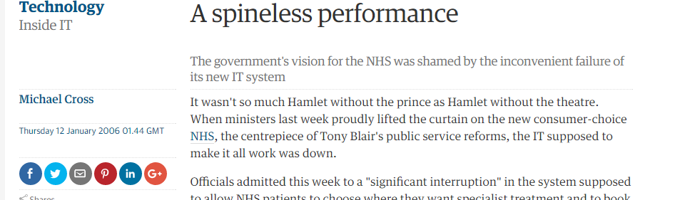

The Big NHS Computer
The Prime Minister said ..
“The possibilities are enormous if we can get this right”
Tonight I intend to ...
Tell a (long) story ... 20 minutes
Rant/Preach for a bit ... 20 minutes
Note - the story is a bit depressing, but it does have a happy ending
See Wikipedia
List of failed and overbudget custom software projects - Permanent Failures

“When one of the dogs goes lame, and begins to slow the others down, they are shot. They are then chopped up and fed to the other dogs. The survivors work harder, not only because they’ve had a meal, but also because they have seen what will happen should they themselves go lame”
“A man left with only two huskies, shouldn't be wasting bullets on a dog”
focus on one programme
The Spine (Core)
Early Timeline
December 2003 - Contract Award
July 2004 - Go Live!
October 2004 - Another release please
February 2005 - Another major release
... must rush-in functionality for other supplier ... supplier will finally use this in May 2010
March 2005 - wound Huskie
... slow down!
December 2005 - new release ... ooops
... g e t ... m u c h ... s l o w e r
In their own words
“It has made transformational healthcare applications available to approximately 1.3 million NHS healthcare staff across England, providing care to circa 50 million UK citizens.”
“20-plus customised NHS Spine applications ... combined cutting edge technologies to meet the demanding service level agreements and response times required ”
More of their own words
“The contract was (and continues to be) one of the largest IT programmes in the world, consuming over 15,000 man-years of effort to date ... Over 3,000 servers are hosted and supported”
“(The delivery) methodology is now an internationally recognised standard for complex software development programme delivery”
What does success look like?
Spine can release with £30m in transition costs alone
It costs over £50m per annum to keep the lights on
Around 50% of the original business case met
The system is stable when untouched
Does replacing Spine follow an inevitable path?
What if we think about it differently?
Pick a select team
Pick a technology stack
Riak KV
Redis, RabbitMQ
Tornado, NGINX, Flask
Puppet, Splunk
HP, Ubuntu
Select a SME Delivery Partner

This is what we did
It made people angry
It made people scared
But it happened ...
Spine 2 Core went live in August 2014
What did/does it cost?
Took 100 man years from inception to 1-years service
Requires just over 100 commodity 1RU servers in live
Release costs are < 0.1% of previous release costs
90% reduction in operating costs
Total running team of 30 people supporting and ...
... Managing more than £10m pa of change backlog
Does it work?
(Nearly) like-for-like functional replacement ...
99.999% available since go live
Supports over 300 message interactions, five UI applications
39.8M messages a day
Provides accesss to 1.5bn records and documents
The NHS waits more than 800 working days less each day
Learning
Invest less in predictions, prepare for them to fail
“It's hard to make predictions, especially about the future”
Systems thinking
“Whereas the difference between poor conceptual designs and good ones may lie in the soundness of design method, the difference between good designs and great ones surely does not.
Great designs come from great designers.
... very best designers produce structures that are faster, smaller, simpler, cleaner, and produced with less effort. ”
Fred Brooks, No Silver Bullet, 1986
Uniformity of system behaviour
“If I could reduce my message to management to just a few words, I’d say it all has to do with reducing variation”
W Edwards Deming, Out of the Crisis, 1982
Getting away from failure
“ ... failure recovery can cause more problems than it solves, and so must be engineered explicitly according to a do no harm requirement”
Use Building Blocks not Magic Boxes
“Anyways, the secret is, always fix their attention away from where the slippery stuff's going on. That's the first law of magic, Specs. Misdirection. Never forget it.”
Donna Tartt, 2013
The first hard problem is getting harder
“There are 2 hard problems in computer science: cache invalidation,naming things, and off-by-1 errors.”
The Purpose of LEAN
“While low inventory levels are a key outcome of the Toyota Production System ... Many American businesses, having observed Toyota's factories, set out to attack high inventory levels directly without understanding what made these reductions possible.
The act of imitating without understanding the underlying concept or motivation may have led to the failure of those projects.”
In conclusion
Government IT need not be all bad
Radical change is possible
Don't blindly follow
Understand that history is rich and full of answers